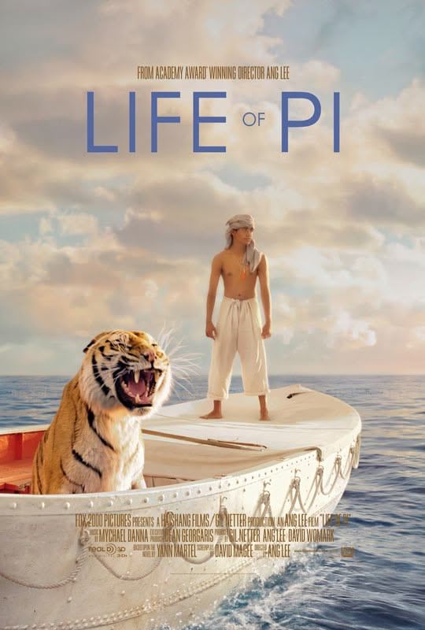
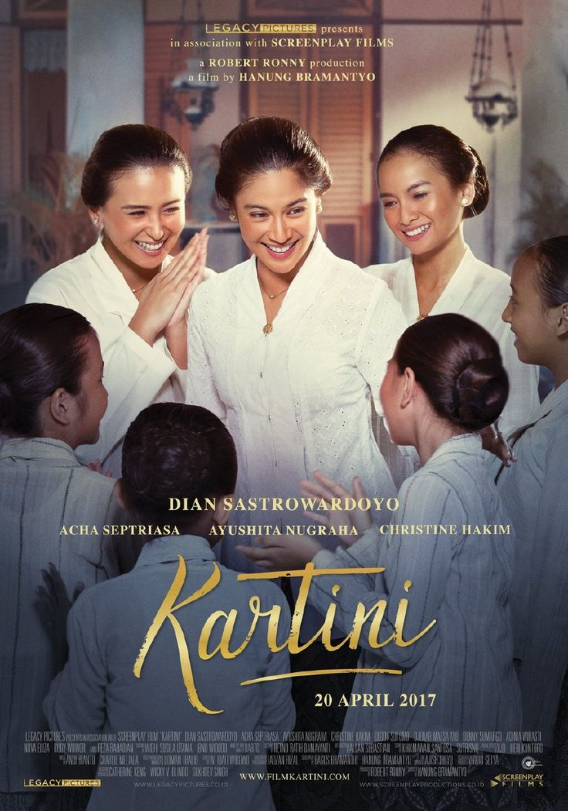

🎬 Tontonan yang Membakar Semangat
Istirahat sejenak dan saksikan bagaimana tekad dan impian bisa mengubah segalanya.

Laskar Pelangi
Kisah keterbatasan fasilitas sekolah yang tak mampu membendung mimpi besar anak-anak Belitong.
Pesan: Kekurangan fisik bukan alasan untuk berhenti bermimpi.

Dead Poets Society
Metode mengajar unik Pak Keating yang menginspirasi murid-muridnya untuk melihat dunia dari perspektif berbeda (*Carpe Diem*).
Pesan: Belajarlah untuk berpikir kritis dan mandiri.

The Pursuit of Happyness
Kisah perjuangan emosional seorang ayah tunggal yang rela melewati masa-masa tunawisma demi meraih karir dan impian.
Pesan: Jangan biarkan orang lain mengatakan bahwa kamu tidak bisa melakukan sesuatu.

Life of Pi
Kisah luar biasa seorang remaja yang terdampar di sekoci di tengah Samudra Pasifik bersama seekor harimau Bengal.
Pesan: Harapan dan ketahanan mental adalah kompas terbaik di tengah badai.

Freedom Writers
Kisah nyata seorang guru tangguh yang menyatukan murid-murid dari geng jalanan melalui tulisan harian.
Pesan: Suaramu dan tulisanmu memiliki kekuatan besar untuk mengubah keadaan.

Sokola Rimba
Kisah nyata perjuangan Butet Manurung mengajarkan baca-tulis kepada anak-anak masyarakat adat Suku Anak Dalam di Jambi.
Pesan: Pendidikan adalah hak dasar yang memerdekakan setiap manusia.

Kartini
Perjuangan pahlawan wanita Indonesia dalam mendobrak tradisi demi memperjuangkan hak kesetaraan pendidikan bagi kaum perempuan.
Pesan: Edukasi mendalam adalah kunci utama emansipasi dan kemajuan bangsa.

Negeri 5 Menara
Perjalanan persahabatan 6 santri di pondok madani yang disatukan oleh mantra ampuh perjuangan hidup: *Man Jadda Wajada*.
Pesan: Siapa yang bersungguh-sungguh, maka ia pasti akan berhasil.

Habibie & Ainun
Kisah cinta legendaris dibalik dedikasi tinggi ilmuwan jenius penerbang bangsa demi mengharumkan nama Indonesia di mata dunia.
Pesan: Kecerdasan intelektual berpadu ketulusan hati menghasilkan karya abadi.